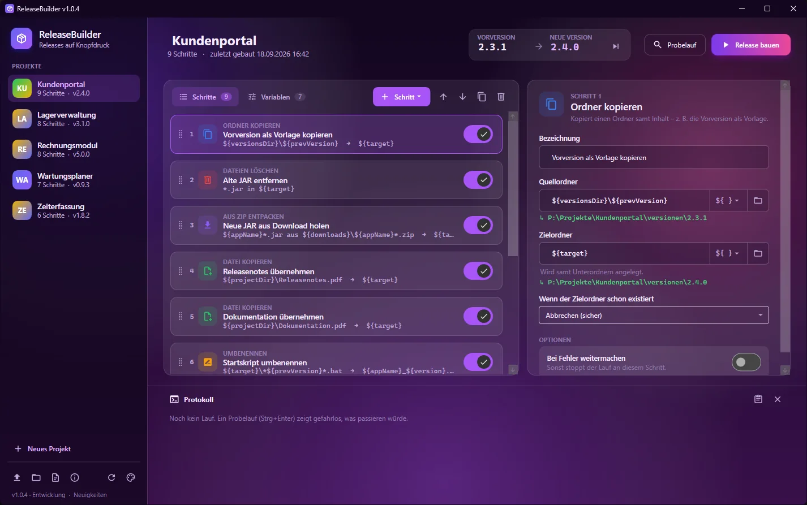
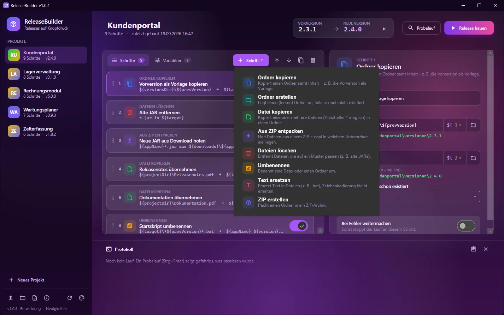
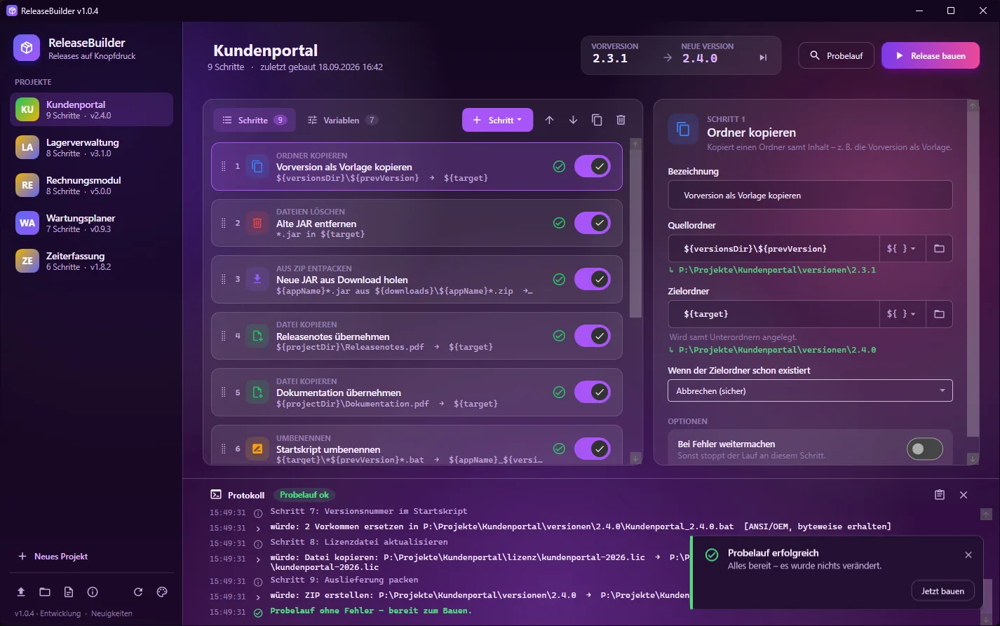
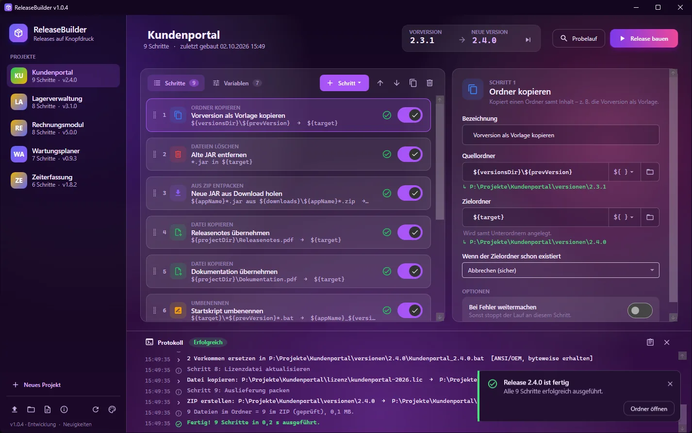
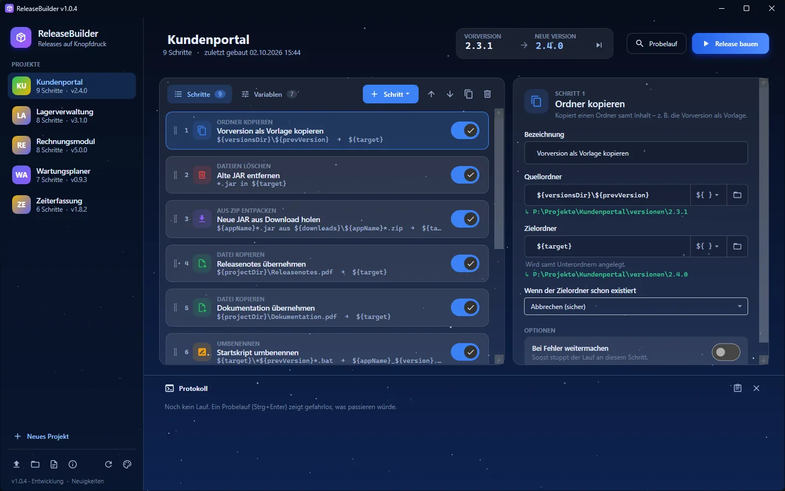
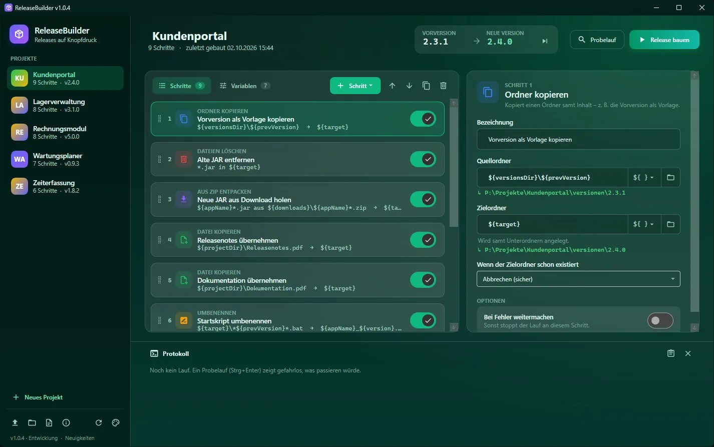
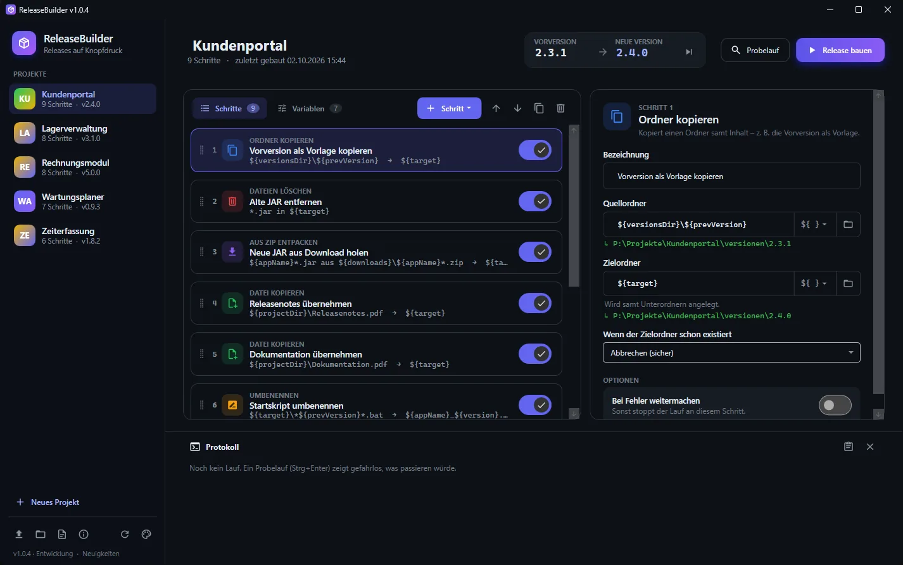
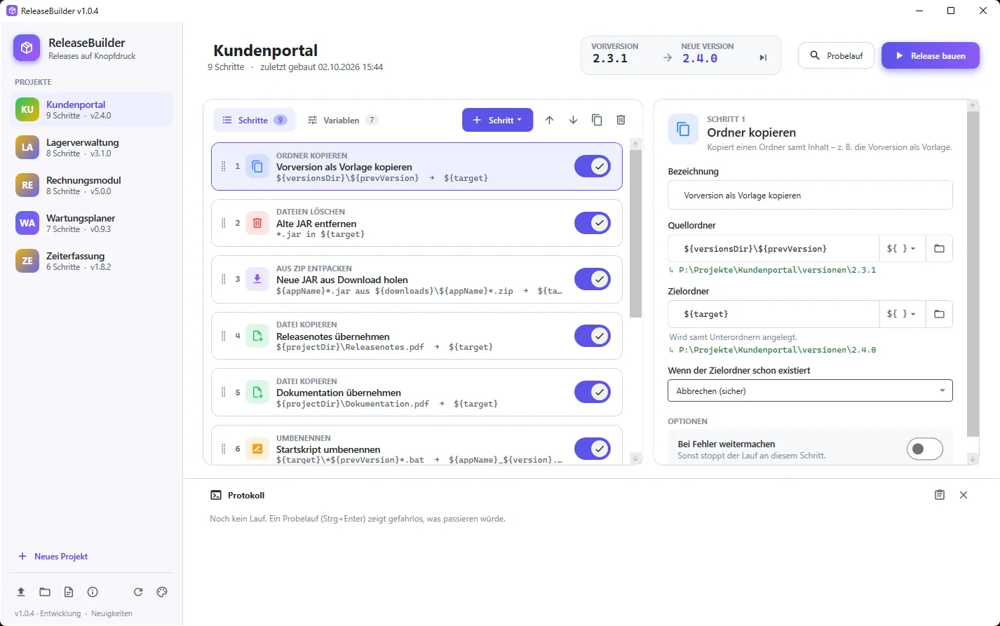

Für Windows
Auslieferungen ohne Handarbeit.
Ordner kopieren, JAR aus dem ZIP holen, Startskripte anpassen, alles packen. Einmal zusammenklicken, danach reicht ein Klick. Der Probelauf zeigt vorher, was passieren würde.
Windows · Updates kommen über die App · Alle Versionen
Dieselben zehn Handgriffe, einmal gebaut.
Die Schritte einer Auslieferung legst du pro Projekt in der Oberfläche fest. Bei jedem Release läuft dieselbe Folge, mit der neuen Versionsnummer.
Pro Projekt
Jedes Projekt hat seine eigene Schrittfolge. Sortieren per Drag & Drop, einzelne Schritte lassen sich abschalten.
Variablen
In jedem Feld funktioniert ${name}. Unter dem Feld siehst du sofort den aufgelösten Pfad oder den Fehler.
Versionen weiterzählen
Ein Klick macht die aktuelle Version zur Vorversion und zählt die neue hoch.

Acht Bausteine.
Jeder Typ kann beliebig oft in einem Projekt vorkommen.
- Ordner kopierenDie Vorversion als Vorlage duplizieren. Bricht standardmäßig ab, wenn das Ziel schon existiert.
- Ordner erstellenEinen leeren Ordner anlegen.
- Datei kopierenEine oder mehrere Dateien, mit
*und?, optional nur die neueste und mit neuem Namen. - Aus ZIP entpackenEine Datei aus einem ZIP holen, egal in welchem Unterordner sie steckt. Bei mehreren ZIPs gilt das neueste.
- Dateien löschenNach Muster, mehrere mit
;getrennt. - UmbenennenDas Muster muss genau eine Datei treffen, zum Beispiel für das Startskript mit der Versionsnummer.
- Text ersetzenZum Beispiel die alte durch die neue Version in der
.bat. Kodierung, Umlaute und Zeilenenden bleiben byte-genau erhalten. - ZIP erstellenDen Ordner packen, wahlweise mit oder ohne Wurzelordner.

Erst ansehen, dann bauen.
Der Probelauf simuliert den ganzen Ablauf, ohne etwas zu verändern. Er folgt sogar Dateien, die erst durch frühere Schritte entstehen würden, und zählt zum Beispiel die Ersetzungen in der kopierten .bat. Beim Bauen läuft zuerst immer ein Probelauf. Bei Problemen wird nichts verändert.


Beim echten Lauf stoppt der erste Fehler den Ablauf, pro Schritt abschaltbar. Ein Rollback gibt es bewusst nicht: Bereits erledigte Schritte bleiben bestehen.
In 60 Sekunden.
- Neues Projekt anlegen und die Vorlage Standard-Release wählen.
- Im Reiter Variablen
projectDir,downloadsundappNameanpassen. - Oben Vorversion und Neue Version eintragen.
- Probelauf starten (Strg+Enter). Er zeigt gefahrlos, was passieren würde.
- Release bauen. Die App prüft vorab automatisch und führt dann alle Schritte aus.
- Fürs nächste Release: Button neben der Version, und es geht von vorn los.
Fünf Farbwelten.




Deine Projekte bleiben bei dir.
Projekte liegen als einzelne Dateien auf deinem Rechner und lassen sich exportieren und importieren. Updates und Deinstallation löschen sie nicht. Die App sucht über GitHub nach neuen Versionen, anonym und ohne Konto.
Weniger klicken, mehr ausliefern.
ReleaseBuilder für Windows. Updates kommen über die App.